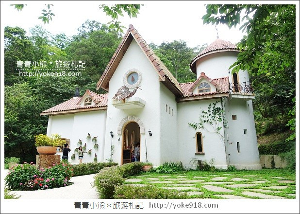
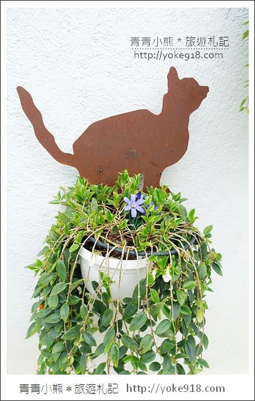
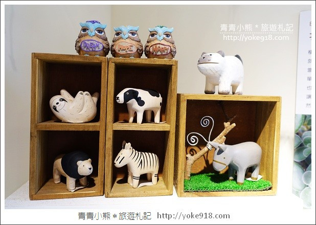

苗栗景觀餐廳～綠葉方舟，
一個充滿綠意的園地，
午後就來這裡慢慢的消磨時光吧！
二訪綠葉方舟，
發現這裡變得不一樣了，
除了原本的建築，
現在在入口處還多了一棟白色城堡，
為了這棟白色城堡，
我們決定再訪綠葉方舟。
(GOOGLE AD)
久違了，綠葉方舟，
還記得上一次來訪是在桐花季的時候，
這回我們避開了桐花季，
選擇假日的午後來訪，
不過人潮一樣非常的多
在進入綠葉方舟入口售票處的時候，
管理人員便告知，
若要用餐需等一個小時才有位置，
這真的一點也不誇張。
我們也等了將近一個小時才有位置。
所以建議大家進來綠葉方舟後，
就先去餐廳登記候位，
再來好好的逛園區，
逛完了，差不多位置也輪到囉！

綠葉方舟入園門票，每人一百元，
其中可以拿來抵園區內的餐飲消費，
禮品店的部份則是不能折抵喔！
穿越了白色拱門，即將進入綠葉方舟。
沒有過多的人工造景，
這裡的一切，依舊是保有它原始的風貌，
這也是綠葉方舟經營的理念之一。
雖然少了裝飾，但是走在樹林之中，
吸取著大自然的芬多精，
我覺得也是很不錯，
多帶著孩子或和家人朋友們出遊，
每一次都有著不同的回憶。
綠葉方舟與前幾年最大的不同，
就是這裡多了一棟幸福小舖，
裡頭賣了許多療癒小物，
不只充滿創意，買回家做裝飾，
看了也會有好心情。
一會兒再帶大家好好的逛一下。
紅磚的尖搭屋頂搭配著純白的建築，
光是外觀就十分的吸睛，
好喜歡這樣的建築，
在這裡可以殺掉不少記憶體。
牆邊的一角，也頗具趣味，
一個一個鐵製的貓咪，
彷彿有著各種不同的動作及個性。

擁有不同姿態的貓兒，
正如貓咪多變的個性，
和牠們來張互動合照，
也還蠻好玩的。
走進了幸福小舖，
裡頭擺放了滿滿的雜貨小物，
喜歡家居佈置的朋友，
可以好好的在這裡逛一下，
不過價位不便宜就是了。
愛蒐集杯子的我，好需要像這樣一面置杯架。
大家看看是不是超可愛的呀？
生活周遭多了這些小物，
心情也跟著愉悅了起來。
一直很想敗入的小熊茶杯，
但家中已經超過上百個馬克杯因此做罷，
這上面根本寫了我的名字嘛。


質感的木質小物，也是非常討喜的一個裝飾品。
連燈具都富有創意，
是機器人造型的，質感很好
但印象中要好幾千呢！
幸福小舖，真的是會讓人手滑的一間店。
繼續往綠葉方舟主建築走去，
水池及林木景觀和之前見到的景象，
大致上沒有太大的改變，
經過了這麼多年，
還能有這樣的景致，
算是很用心在維護園區。
引用文章: ＊青青小熊＊旅遊札記